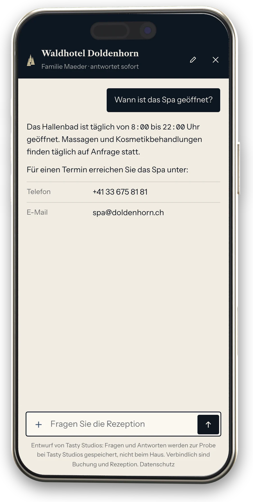
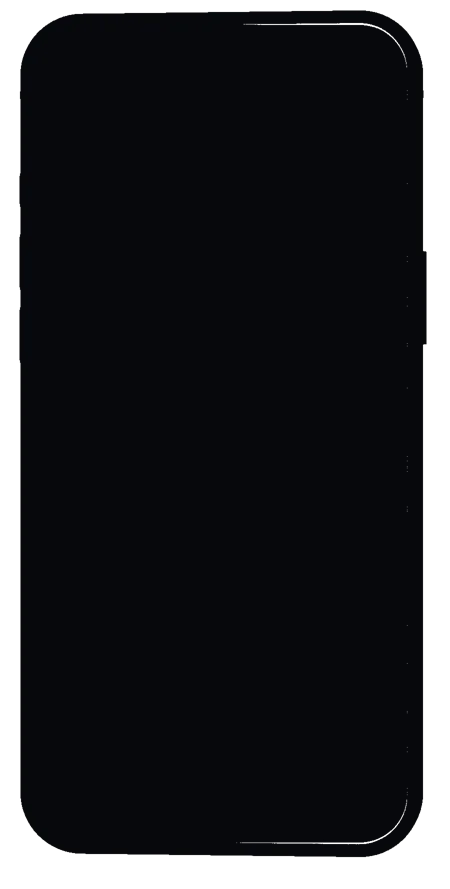
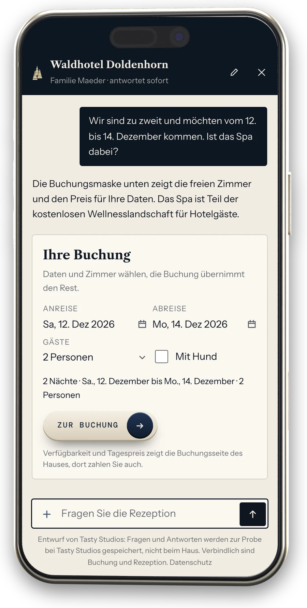
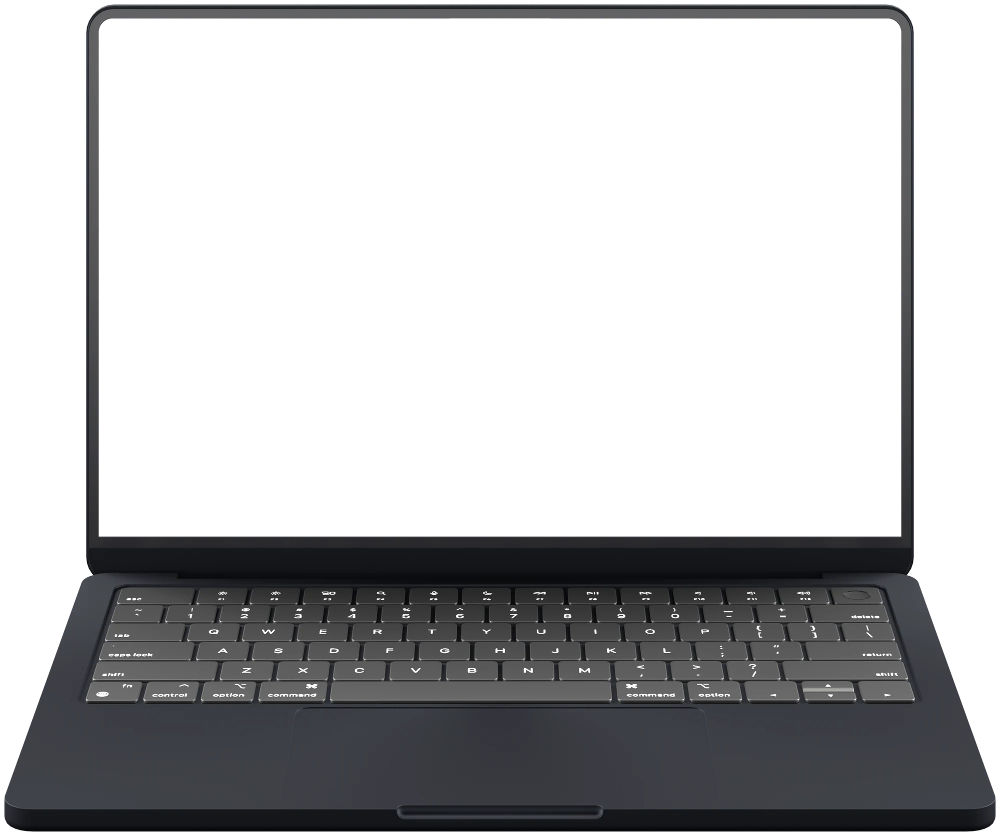

Was Gäste wissen wollen.
Vier Gespräche mit der Rezeption vom 10. Oktober, die Antworten im Wortlaut. Steht etwas nicht in den Unterlagen, sagt sie das, statt zu raten.





Unten rechts auf jeder Seite sitzt die Rezeption des Waldhotel Doldenhorn. Gäste fragen dort nach dem Hallenbad, dem Au Gourmet oder dem Weg zum Oeschinensee und bekommen die Antwort sofort, aus den Seiten und Karten des Hauses, auch spätabends.
Dahinter arbeitet eine KI. Was nicht in den Unterlagen steht, gibt sie an die Rezeption weiter.
Zu zweit, vom 12. bis 14. Dezember. So läuft das Gespräch auf dem Handy:
Vier Gespräche mit der Rezeption vom 10. Oktober, die Antworten im Wortlaut. Steht etwas nicht in den Unterlagen, sagt sie das, statt zu raten.




Ein Haus mit Spa und drei Restaurants bekommt jeden Tag dieselben Fragen: wann das Bad offen ist, was eine Massage kostet, an welchen Tagen das Au Gourmet zu hat. Die Rezeption beantwortet sie aus dem Massage-Menü, der Spa-Etikette, der grossen Karte, der Bistrokarte und der Weinkarte, dazu aus jeder Seite der Website.
Am Telefon bleibt dann Zeit für das, was ein Gespräch braucht: den Termin im Spa, den Tisch zum Hochzeitstag, den Gast, der etwas Besonderes vorhat.
Sobald ein Gast nach Daten fragt, legt die Rezeption die Buchungsmaske ins Gespräch. «Zur Buchung» öffnet das Buchungssystem des Hauses in einem grossen Fenster, mit den Daten des Gastes, den freien Zimmern und dem Preis des Tages. Bezahlt wird dort wie bisher.
Bildschirmfoto vom 10. Oktober 2026 auf der Website des Waldhotel Doldenhorn, die Antwort der Rezeption im Wortlaut.

Im Studio steht unter «Gäste & Anfragen» jede Frage der Woche. Was die Rezeption nicht aus den Unterlagen beantworten konnte, ist markiert. Das Haus ergänzt dann seine Seite, und die nächste Frage dazu ist beantwortet.
Für Hochzeiten, Seminare und Bankette gibt es den Anfragen-Assistenten: Die Mail des Gastes kommt hinein, ein Entwurf im Ton des Hauses kommt heraus, mit den Preisen aus dem Hochzeitsflyer und den Seminarpauschalen. Was das Haus entscheiden muss, steht in Klammern. Verschickt wird erst, wenn jemand vom Team gelesen hat.


Liebe Nina Gerber
Herzlichen Dank für Ihre Anfrage. Wie schön, dass Sie Ihre Hochzeit bei uns feiern möchten …
Package Classic, CHF 170.00 pro Person
Sekt-Aperitif mit Knabbergebäck, 4-Gang-Menü, Rot- und Weisswein, Hochzeitstorte, Tischdekoration, bis 1.00 Uhr.
Package Exquisit, CHF 250.00 pro Person
…
[Verfügbarkeit Juni 2027 prüfen]
Die Rezeption kennt die Vorhersage der nächsten drei Tage für Kandersteg, den Oeschinensee und den Gemmipass, dazu die Seiten der Gondelbahn zum Oeschinensee, der Luftseilbahn Sunnbüel und der BLS. Daraus stellt sie einen Tag zusammen: bei Regen eher Hallenbad und Saunen, bei klarem Himmel die Gondel zum See.
Betriebszeiten nennt sie mit der Quelle und dem Hinweis, sie vor der Fahrt nachzusehen.

Carlton-Europe, Waldhotel Doldenhorn, Landgasthof Ruedihus und Berghotel Gasterntal haben dieselbe Rezeption, jede in den Farben und mit dem Wissen ihres Hauses.